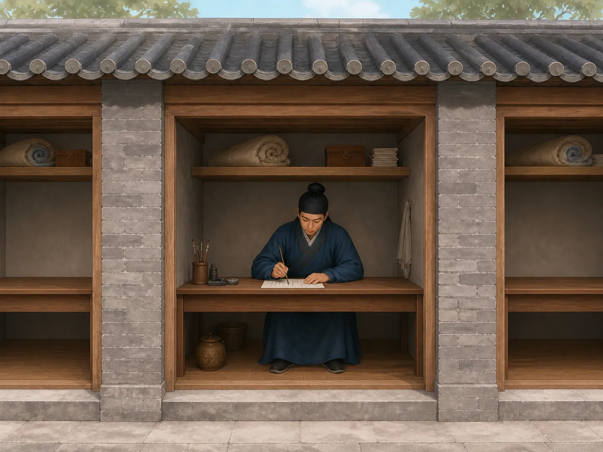
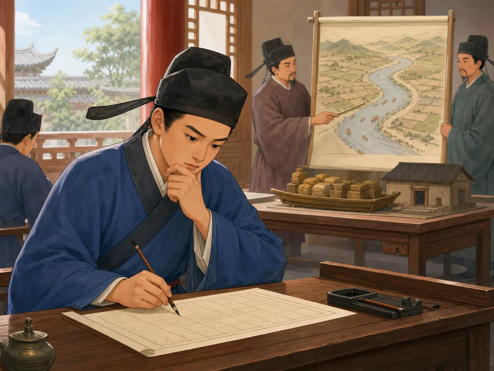

科举到底考什么？
What Was on the Imperial Exam?
Page 1
毛笔准备好了
The Brush Is Ready

A candidate sits alone in a narrow examination cell with his brush, ink, and papers ready.
一个考生坐下来，面前摆着毛笔、墨和考卷。为了走到这一场考试，他可能已经读了很多年书。现在，最重要的时刻来了。题目是什么？
这个问题的答案，要先看他生活在哪个时代。中国的kējǔ · 中国古代通过考试选拔官员的制度。延续了许多世纪，可考卷并不是一千多年都长着同一副模样。朝廷会改题，因为人们也一直在讨论：一个将来要做官的人，到底应该会什么？又应该怎样证明自己会？
到了唐代，进士考试里甚至会出现一件今天听起来很特别的事情：写诗。
A candidate sits down with a brush, ink, and sheets of paper. He has studied for years to reach this exam. Now comes the important moment. What is the question?
The answer depends on when he is taking the test. China’s kējǔ · 科举 · The examination system used in imperial China to select officials. lasted for many centuries, but the exam paper did not stay the same. Governments changed the questions because they kept changing their minds about what a future official ought to know and how he should show it.
In the Tang dynasty, one important exam might even ask you to write a poem.
Page 2
唐代：写一首诗——可不能随便写
Tang: Write a Poem—But Follow the Rules

A boy practices writing by lamplight with a brush and rolled books spread across the table.
到了Táng cháo · 618年至907年的中国朝代。后期以前，诗已经成为jìnshì · 科举最高层级考试中取得的功名，常成为进入仕途的重要起点。的重要考试内容之一。进士考生还要面对其他写作，其中包括讨论政事的cèwèn · 科举中让考生回答历史或治理问题的写作题。。
不过，考场里的诗并不是“今天心情不错，随便写一首”。题目可能已经规定好了，押什么韵也可能有限制。考生要熟悉诗歌的写法，还得坐在考场里，当场把字句、节奏和韵脚安排好。一个人练了很多年的诗文，到了这一刻，写出来的几行字真的可能决定他能不能继续往前走。
唐代的考试并不只想知道考生背过多少书。怎样使用文字，本身也是一种本领。
可是几百年以后，有人开始问：做官的人为什么一定要在考试里写诗？
By the later seventh century, poetry had become part of the Tang jìnshì · 进士 · A prestigious degree earned through the highest levels of the imperial examination system., one of the most admired routes into government service. Candidates also faced other kinds of writing, including questions about government.
But an examination poem was not simply, “Write anything beautiful.” The topic could be given to you. The rhyme could be controlled. You had to understand the kind of poetry the examiners expected and then produce it while sitting under exam pressure. Imagine learning poetry for years and then opening the paper to discover that today, your choice of words, rhythm, and rhyme may help decide whether you move on.
Tang examiners were not looking only for someone who could remember books. They also cared about how well a candidate could handle written language.
Then, several centuries later, reformers asked a new question: Why are we testing poetry at all?
Page 3
宋代：把诗拿掉
Song: Take the Poetry Away

A candidate writes at his desk while officials examine a river map behind him.
1071年，Sòng cháo · 中国历史上从960年延续到1279年的朝代。Wáng Ānshí · 北宋政治家与改革者，在1071年推动科举考试内容改革。等人推动科举改革，进士科不再考诗fù · 中国古代一种铺陈描写、兼有韵文和散文特点的文体。，而把更多分量放到了jīngyì · 科举中根据题目解释儒家经典意义的文章。、论和策上。
这一下，准备考试的方法也跟着变了。考生可能要面对一段儒家经典，解释其中的意思；也可能要写策，讨论国家应该怎样处理政事。原来花很多时间练习诗赋的人，面对的是一张不一样的考卷。
当然，这次改变也没有成为永远不变的答案。后来诗赋一度重新回到考试里，科举的规则还会继续调整。这正是科举很有意思的一点：连负责考试的人，也一直在争论“到底应该考什么”。
又过了几百年，另一种非常严格的文章越来越重要。
In 1071, during the Sòng cháo · 宋朝 · The Chinese dynasty that lasted from 960 to 1279., reformers led by Wáng Ānshí · 王安石 · A Northern Song statesman and reformer who helped change examination subjects in 1071. changed the jìnshì examination.
Poetry and fù · 赋 · An early Chinese literary form combining expansive description with features of prose and verse., another literary form, were removed. Instead, candidates were tested more heavily on explaining the Confucian classics and writing about government. That was a big change. A student who had spent years practicing one kind of writing now lived in a world where another kind mattered more. He might be given a passage from a classic and have to explain its meaning. He might also have to write a cèwèn · 策问 · An examination response discussing a question about history or government policy., discussing questions about how a government should act.
The reform did not end the argument. Poetry later returned for a time, and examination rules changed again. That is one of the surprising things about the imperial exams: even the people running them could not agree forever about what made a good official.
Centuries later, the pendulum swung toward an especially strict kind of writing.
Page 4
明清：文章有了很紧的框架
Ming and Qing: Writing Inside a Tight Frame
到了Míng cháo · 1368年至1644年的中国朝代。，准备参加重要科举考试的读书人，要花大量时间学习Sìshū, Wǔjīng · 儒家教育与科举学习中长期重视的两组经典。。
其中最有名的一种考试文章，就是后来人们常说的bāgǔwén · 明清科举中结构严格、讲究对偶的经典论说文。。八股文有规定好的结构，其中好几个部分还讲究成对、平衡的句子。考生既要紧扣经典原文和当时认可的解释，又要把自己的文章装进规定的格式里。要真正写好，并不轻松，需要长时间练习，也需要对文字有很强的控制力。
可是，这个框架也非常窄。一个人可以有很多种聪明：有人很会想办法，有人很会观察，有人很会带人做事。八股文考的，却是怎样在一种非常特别的文章形式里表现自己的经典学习和写作能力。
而且，即使在明清时期，科举也不等于“从头到尾只写八股文”。
By the Míng cháo · 明朝 · The Chinese dynasty that lasted from 1368 to 1644., candidates preparing for the major examinations spent enormous amounts of time studying the Sìshū, Wǔjīng · 《四书》《五经》 · Two groups of Confucian classics central to education and examination study in imperial China..
For important questions on the classics, they learned to write in a highly controlled form that became known as the bāgǔwén · 八股文 · A tightly structured examination essay based on the classics and known for balanced parallel sections.. The essay had a set structure. Several sections used carefully balanced, parallel writing. The candidate had to stay closely connected to the words and accepted meaning of the classical passage while arranging his argument inside the required form. Writing one well took memory, practice, and very precise control of language.
It was also a narrow frame. There were many ways a person might be clever, practical, imaginative, or good at solving problems, but this exam asked him to show his learning in one very particular kind of writing.
And even then, the whole exam was not simply page after page of eight-legged essays.
Page 5
一场考试，要换好几种写法
Three Sessions, Different Kinds of Work
中国国家博物馆保存着真正的明代xiāngshì · 明清科举中在各省举行的重要考试，考中者称举人。试卷和草稿，让我们知道当时的考生还会遇到什么。乡试通常分成三场。第一场主要考《四书》《五经》文章；后面的考试还会出现论、诏表等公文、判语以及策问。
也就是说，考生要不断换一种写法。先认真解释经典。后来又要写官府可能使用的文章。再面对历史和政事问题，写出自己的回答。
Qīng cháo · 1644年至1912年的中国最后一个帝制王朝。很长时间里也沿用了类似的三场考试，并且在一些时期把规定格式的诗也放进重要考试。同一个考生，不能只会一种文章。
A real Ming examination paper preserved in the National Museum of China helps show what candidates faced. Major xiāngshì · 乡试 · A major Ming and Qing examination held at the provincial level. had three sessions. In the first, candidates wrote about the Four Books and Five Classics. Later sessions could ask for an essay, official documents, legal judgments, and policy questions about history and government.
So a candidate had to switch kinds of writing. First, explain a classic carefully. Later, write as if preparing the kinds of documents officials might use. Then think about larger questions of government.
The Qīng cháo · 清朝 · China's last imperial dynasty, lasting from 1644 to 1912. kept a similar three-session system for much of its history and also included regulated poetry during certain periods. The exam paper kept asking the candidate to change gears.
Page 6
下一页会是什么题？
What Will Be on the Next Page?
现在，再把毛笔放回那个考生手里。如果他生活在唐代，可能正在准备写一首考试诗；到了宋代，一次改革就可能把诗换成解释经典和讨论政事；到了明清，他可能练了许多年格式严密的文章，然后还要在后面的考试里面对其他题目。
桌子上还是毛笔、墨和纸。可是考生这些年到底在学什么，很大一部分取决于朝廷决定在那张纸上问什么。考题一变，准备考试的人也会跟着变。再改一次，读书的方法又会改变。
几百年里，一代又一代考生坐到了考卷前面。在他们有机会成为官员以前，都要先做同一件最简单的事情：看看今天到底出了什么题。
Now put the brush back in the candidate’s hand. In Tang China, he might be preparing to write a poem. In the Song, a change in government policy might replace that poem with an explanation of a classic. In the Ming or Qing, years of practice might lead to a tightly structured essay, followed by other kinds of questions in later sessions.
The desk still has a brush, ink, and paper. But what the candidate has spent years learning depends partly on what the government has decided to put on that paper. Change the exam, and students begin preparing for a different exam. Change it again, and classrooms change with it.
For hundreds of years, generations of Chinese students opened examination papers without knowing exactly what their own answers would bring. But before they could become officials, there was always one thing they had to do first: read the question.